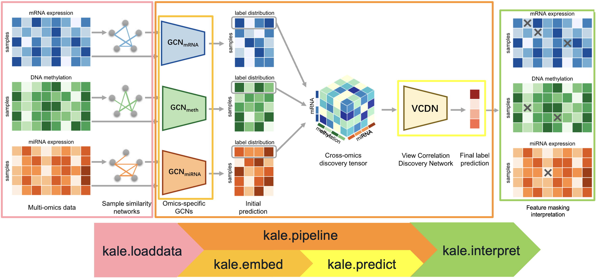

Multiomics Cancer Classification#

In this tutorial, we demonstrate how to use the standard pipeline in PyKale to integrate patient multiomics data in cancer classification.
We use Multi-Omics Graph cOnvolutional NETworks (MOGONET) by Huang et al. (Nature Communication, 2021) as an example.
This tutorial is about cancer subtypes classification problem, which is a multi-class classification problem. The input is the multiomics data from patient, including mRNA expression data, DNA methylation data, and miRNA expression data. The output will be the subtype of cancers. We have two datasets to work with, BRCA and ROSMAP. BRCA has five subtypes and ROSMAP has only two.
Step 0: Environment Preparation#
As a starting point, we will install the required packages and load a set of helper functions to assist throughout this tutorial. To keep the output clean and focused on interpretation, we will also suppress warnings.
To prepare the helper functions and necessary materials, we download them from the GitHub repository.
import os
!rm -rf /content/mmai-tutorials
!git clone https://github.com/pykale/mmai-tutorials.git
%cd /content/mmai-tutorials/tutorials/multiomics-cancer-classification
print("Changed working directory to:", os.getcwd())
Package Installation#
The main package required for this tutorial is PyKale.
PyKale is an open-source interdisciplinary machine learning library developed at the University of Sheffield, with a focus on applications in biomedical and scientific domains.
Then, we install PyG (PyTorch Geometric) and related packages.
[WARNING] Please do not re-run this session after installation completed. Runing this installation multiple times will trigger issues related to PyG. If you want to re-run this installation, please click the Runtime on the top menu and choose Disconnect and delete runtime before installing.
[Estimated running time] 3 mins
!pip install --quiet \
git+https://github.com/pykale/pykale@main \
yacs==0.1.8 \
torch-scatter torch-sparse torch-cluster torch-spline-conv torch-geometric \
-f https://data.pyg.org/whl/torch-2.6.0+cu124.html \
&& echo "pykale,yacs and wfdb installed successfully ✅" \
|| echo "Failed to install pykale,yacs ❌"
We then hide the warnings messages to get a clear output.
import os
import warnings
warnings.filterwarnings("ignore")
os.environ["PYTHONWARNINGS"] = "ignore"
Configuration#
To minimize the footprint of the notebook when specifying configurations, we provide a config.py file that defines default parameters. These can be customized by supplying a .yaml configuration file, such as configs/BRCA.yaml as an example.
First, we load the configuration from configs/BRCA.yaml.
from config import get_cfg_defaults
cfg = get_cfg_defaults()
cfg.merge_from_file("configs/BRCA.yaml")
Besides, we also provide a configuration file for another dataset ROSMAP, named configs/ROSMAP.yaml. Users can try with this dataset later.
In this tutorial, we list the hyperparameters we would like users to play with outside the .yaml file:
cfg.SOLVER.MAX_EPOCHS_PRETRAIN: Number of epochs in pre-training stage.cfg.SOLVER.MAX_EPOCHS: Number of epochs in training stage.cfg.DATASET.NUM_MODALITIES: Number of modalities in the pipeline.1: mRNA expression.2: mRNA expression + DNA methylation.3: mRNA expression + DNA methylation + miRNA expression.
[NOTE] Because this tutorial aims to demonmstrate PyKale pipeline, we only set cfg.SOLVER.MAX_EPOCHS_PRETRAIN=100 and cfg.SOLVER.MAX_EPOCHS=500 to reduce the training time.
If users are interested, please increase them to get more accurate predictions.
cfg.SOLVER.MAX_EPOCHS_PRETRAIN = 100
cfg.SOLVER.MAX_EPOCHS = 500
cfg.DATASET.NUM_MODALITIES = 3
Print hyperparameters:
print(cfg)
Step 1: Data Loading and Preparation#
We use two multiomics benchmarks in this tutorial, BRCA and ROSMAP, which have been provided by the authors of MOGONET paper in their repository.
If users are interested in more details regarding data organization, downloading, loading, and pre-processing, please refer to the Data page of the tutorial.
Delete the potential existing data and download new version:
!rm -rf dataset/
To load data, we first define a list the names of data files:
file_names = []
for modality in range(1, cfg.DATASET.NUM_MODALITIES + 1):
file_names.append(f"{modality}_tr.csv")
file_names.append(f"{modality}_lbl_tr.csv")
file_names.append(f"{modality}_te.csv")
file_names.append(f"{modality}_lbl_te.csv")
file_names.append(f"{modality}_feat_name.csv")
Then, we download, load, and pre-process the data by PyKale.
[Estimated running time] 20s
import torch
from kale.loaddata.multiomics_datasets import SparseMultiomicsDataset
from kale.prepdata.tabular_transform import ToOneHotEncoding, ToTensor
multiomics_data = SparseMultiomicsDataset(
root=cfg.DATASET.ROOT,
raw_file_names=file_names,
num_modalities=cfg.DATASET.NUM_MODALITIES,
num_classes=cfg.DATASET.NUM_CLASSES,
edge_per_node=cfg.MODEL.EDGE_PER_NODE,
url=cfg.DATASET.URL,
random_split=cfg.DATASET.RANDOM_SPLIT,
equal_weight=cfg.MODEL.EQUAL_WEIGHT,
pre_transform=ToTensor(dtype=torch.float),
target_pre_transform=ToOneHotEncoding(dtype=torch.float),
)
Inspect the dataset:
print(multiomics_data)
Step 2: Model Definition#
If users are interested in more details regarding the model, please refer to the Helper Function & Model Definition of the tutorial.
To initialize the model, we firstly call MogonetModel from model.py.
from model import MogonetModel
mogonet_model = MogonetModel(cfg, dataset=multiomics_data)
Visualize the model architecture:
print(mogonet_model)
Step 3: Model Training#
Pretrain Unimodal Encoders#
Before training the multiomics model, we first pretrain encoders for each modality independently. This step helps each GCN encoder learn a good representation of its respective modality before integration.
We can define the trainer of pretraining stage by:
import pytorch_lightning as pl
network = mogonet_model.get_model(pretrain=True)
trainer_pretrain = pl.Trainer(
max_epochs=cfg.SOLVER.MAX_EPOCHS_PRETRAIN,
default_root_dir=cfg.OUTPUT.OUT_DIR,
accelerator="auto",
devices="auto",
enable_model_summary=False,
)
We pretrain the model by:
[Estimated running time] 15s for 100 epochs
trainer_pretrain.fit(network)
Train the Multimodal Model#
After pretraining the unimodal pathways, we now train the full MOGONET model by enabling the VCDN. In this stage, all modality-specific encoders and VCDN are trained.
We define the trainer of multimodal training by:
network = mogonet_model.get_model(pretrain=False)
trainer = pl.Trainer(
max_epochs=cfg.SOLVER.MAX_EPOCHS,
default_root_dir=cfg.OUTPUT.OUT_DIR,
accelerator="auto",
devices="auto",
enable_model_summary=False,
log_every_n_steps=1,
)
We start the multimodal training by:
[Estimated running time] 1 min for 500 epochs
trainer.fit(network)
Step 4: Evaluation#
Once training is complete, we evaluate the model on the test set using trainer.test().
trainer.test(network)
Step 5: Interpretation Study#
We use kale.interpret to perform interpretation, where a function that systematically masks input features and observes the effect on performance—highlighting which features are most important for classification is provided. Please refer to Interpret Study page for more details.
Because the interpretation study needs us to mask one feature and observe the performance drop, we firstly define the trainer for the interpretation experiments.
[NOTE] The final results may be different from what they should be because we only train the model for a few epochs to reduce waiting time in this tutorial.
from kale.interpret.model_weights import select_top_features_by_masking
import pytorch_lightning as pl
trainer_biomarker = pl.Trainer(
max_epochs=cfg.SOLVER.MAX_EPOCHS,
accelerator="auto",
devices="auto",
enable_progress_bar=False,
)
Then, we start the experiment.
To supress the verbose messages in the following experiments:
import logging
logging.getLogger("pytorch_lightning").setLevel(logging.ERROR)
Run the interpretation experiments:
[Estimated running time] Because the following block will train the model for 2,503 times for BRCA dataset, the following block may take about 6 minutes.
f1_key = "F1" if multiomics_data.num_classes == 2 else "F1 macro"
df_featimp_top = select_top_features_by_masking(
trainer=trainer_biomarker,
model=network,
dataset=multiomics_data,
metric=f1_key,
num_top_feats=30,
verbose=False,
)
Print the most important features:
print("{:>4}\t{:<20}\t{:>5}\t{}".format("Rank", "Feature name", "Omics", "Importance"))
for rank, row in enumerate(df_featimp_top.itertuples(index=False), 1):
print(f"{rank:>4}\t{row.feat_name:<20}\t{row.omics:>5}\t{row.imp:.4f}")